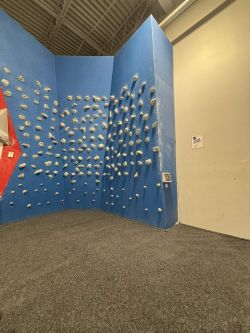
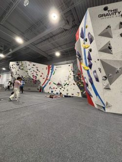
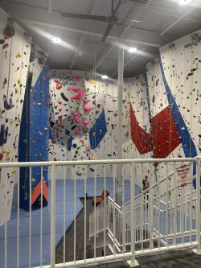

Here's a little look into the climbing gym that I spend most of my time in!
| ICON | Key |
|---|---|
| Route-Set Walls | |
| Free Climb Walls | |
| Gym |

The Cave is my favorite area of the gym because it's a good mix of everything! Depending on the week, the routes changes but there are usualyl some really fun overhang climbs that force you to be a bit creative. You'll start out climbing underneath the wall, and then at some point you'll have to commit and transition back to vertical
That shift is what makes the cave so interesting! You not only need strength, but the mental fortitude to read the route and top the wall, especially with gravity working against you. This is the spot that pushes you to build both good technique and strong endurance over time!

The Clift Wall is a free climbing area where you have no destination, just hang onto the wall and move around! This is a great spot for beginners to start off on since the hold don't go too high and they can get a good feel of the wall before attacking a real climb!
There is also a tablet that you can use to climb routes set by other climbers in the gym. I usually use this to warm down after a long day of climbing.

Most climbing gyms typically have a gym area, and Gravity Vault Princeton is no expection. They have everything a climber may need, including pull-up bars, dumbells, bench presses, and cable machines! There is also a treadmill, elliptical, and rowing machine for those who want to improve on their cardio.
This is the perfect place to stretch and warm up before a long, hard climbing session.

You can never start them too young, especially since there is a whole section dedicated for kids to begin learning how to climb. This section is a bit more fun, especially since the holds resemble dinosaurs, legos, and some of their favorite characters!

Overhang is the spot if you really want to feel it in the morning. The incline makes it extremely difficult to keep your feet on the wall, and gravity is working against you at every part of the climb.
Since this is also a free climb area, it's a lot of fun to just jump onto the wall and see where it takes you. There is also a kilter board for more advanced climbers to use!

The Slab Wall is either your favorite or least favorite wall. The wall is positioned less than 90 degrees, meaning it leans away from the climber. Thus, it is less strength-based compared to the other walls since slab emphasizes on balance, precise footing, and good friction.
Most of the climbs that I prefer are on the slab wall, but I will say they are scary sometimes! But good technique, like smearing, palming, straight arms, and trusting your feet, will always lead to a good day on slab!

This section is dedicated exclusively to the top ropes. They have traditional belays, auto belays, and the option to lead climb if you know how! Sometimes, I'll rent a harness and do some top ropes mid session if I don't feel like the bolders are hitting. There a sort of rush that you get at the top of the climbs that you just don't have when bouldering!